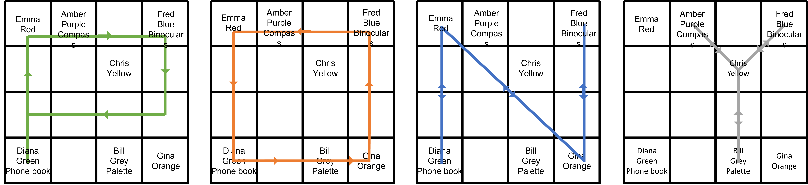
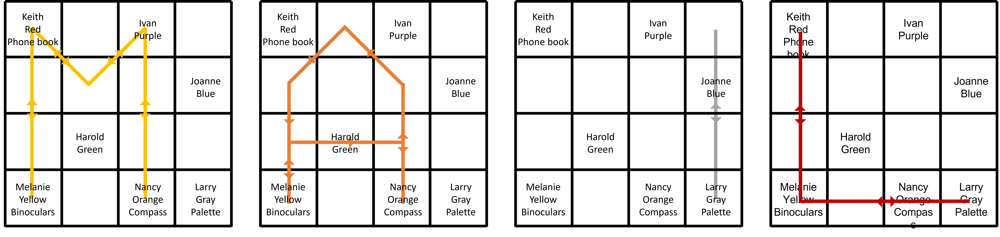

Solution: Friendly Neighbors
Answer: EXPRESS
Written by Seth Mulhall and Danny Bulmash
This looks like a conventional Einstein puzzle/zebra puzzle, which is a standard logic puzzle type. So we just have to figure out where each person lives, what color their house is, and what gift they gave you (if any). However, this puzzle has some very strange features. Some clues blatantly contradict each other, e.g. (left version):
- Believe me, the red house is in the row six to the north of the phone book gifter's house.
- There are no houses south of the red house.
Also, unlike most Einstein puzzles, the clues are spoken by characters appearing in the puzzle, which can be seen from some of the self-referential clues, e.g. (right version):
- I live in a house that is neither yellow nor gray.
Due to this, there is an implicit logic that speakers never refer to themselves in the third person.
Finally, the characters' gifts are suspiciously related to things that appear in the clues - the compass is related to directions in the neighborhood, the artist's palette is related to house colors, the phone book is related to character names, and binoculars have two lenses and are related to numbers.
These features suggest that all of the gift-givers are giving you incorrect information in a way which is related to their gift:
- The person who gives you the compass inverts directions; north and south are exchanged in their clues, as are east and west.
- The person who gives you the artist's palette inverts colors on the color wheel; their clues exchange red and green, blue and orange, and purple and yellow. Gray is unchanged.
- The person who gives you the phone book inverts the alphabetical order of the characters' names, i.e., the pairs (Amber, Gina), (Bill, Fred), (Chris, Emma) are switched in the left version, and the pairs (Harold, Nancy), (Ivan, Melanie), (Joanna, Larry) are switched in the right version. The middle name on the list, i.e. Diana (left) and Keith (right) is unchanged.
- The person who gives you binoculars is seeing double - they double all numbers appearing in their clues.
These mechanics can be confirmed from “opposite” appearing in the flavor text (for everything except the binoculars) and from the fact that one character uses only even numbers in their clues (and thus gave you the binoculars).
The gifts can then be assigned to speakers in a way which resolves the various contradictions in the clues.
Left Gift Assignment
Clue numbers used here reference the clues in the left version of the puzzle. Please see the transcript for numbers.
The speaker of clue 11 gave you the phone book, so we can immediately correct all of their clues. Hence Fred gave you the binoculars (4). The speaker of clue 13 did not give you the phone book, so he gets names right and is actually Bill. Then Fred, the binoculars gifter, must be the other male speaker (of clue 1). This leaves the speaker of clue 2 to have gifted the artist’s palette.
Since people do not refer to themselves in the third person, the only person that can have given you the compass is Amber (10, 14, 32), and the only person that could give you the phone book is Diana (2, 7, 22).
The speakers and gifts, in order of the last four clues, are:
- Diana: Phone Book
- Bill: Artist's Palette
- Fred: Binoculars
- Amber: Compass
Right Gift Assignment
Clue numbers used here reference the clues in the right version of the puzzle. Please see the transcript for numbers.
Taking the clues at face value, we know Keith didn't give you the artist's palette (13), Ivan gave you the binoculars (20), and Joanne gave you the compass (23, 27). Therefore, Keith gave you the phone book. Correcting Keith's clues shows that Melanie actually gave you the binoculars (20).
We also now know that Larry lives in the gray house (18). Thus, Larry did not give you the compass, and must have given you the artist's palette.
Due to speakers never referring to themselves in the third person, we can infer that the second female speaker is not Melanie (33), so the first female speaker must be Melanie. We also know that the second female speaker is not Joanne (25), which is a contradiction. After correcting Larry's clues, however, we see now that the person in the orange house was the one that gave the compass (27), so we can determine that the second female speaker is Nancy and gave you the compass.
The speakers and gifts, in order of the last four clues, are:
- Melanie: Binoculars
- Nancy: Compass
- Larry: Artist's Palette
- Keith: Phone Book
At this point, the puzzle can be solved as a standard Einstein puzzle.
A few comments on the solutions:
- It turns out that in both versions, the person who gives you the phone book gets their own name right and the person who gives you the artist's palette gets their own house color right, but this information is not needed to solve the puzzle.
- After understanding how to correct the given information, neither version requires every clue to solve, nor does it require the information about the speakers' genders. The additional information is present to confirm the solver's understanding of the misinformation.
- In both versions of the puzzle, the person that gave you the binoculars says that the neighborhood is an eight by eight grid. Once corrected, we discover that the neighborhood is a much smaller four by four grid.
After solving the Einstein puzzle (see the end of the solution), we can use the final four clues for each side, where the speaker says what they did yesterday. Each speaker is traveling a path around the neighborhood which spells out a letter:
Left Letters
Right Letters
The left side extracts to PONY, and the right side extracts to MAIL. The word that fits to the right of PONY and to the left of MAIL is the answer, EXPRESS.
Binoculars Extraction
The fact that one of the gifts is a pair of binoculars is highly suspicious, as is the fact that the person who gives you the binoculars has very strange lead-ins to clues. Each of their clues has a single number in it; correcting the information (i.e. halving the number) and indexing into the clue in the (alphabetical by clue) order given produces the left/right answers GLORIFY (left) and AIR PURIFIER (right).
Left Logic
Here are the corrected clues.
- A guy named Chris lives in the row two to the north of Gina.
- Gina did not give you a gift.
- Believe me, the red house is in the row three to the north of the phone book gifter's house.
- Fred gave you the binoculars.
- Bill lives two blocks due south of the yellow house.
- Diana lives in the green house.
- Exactly two people who gave you gifts live south of Amber.
- Fred lives east of the yellow house.
- Bill's house is west of the orange house.
- Gina lives somewhere south and east of the yellow house.
- I gave you the phone book and I live in a row south of the person who gave you the binoculars.
- I know that the neighborhood is a square grid with four lots on a side.
- My name is Bill and I did not give you the phone book.
- My name is not Emma.
- Remember that Bill's house is adjacent (counting diagonally) to exactly one other house.
- Sitting in the second column from the west end of the neighborhood is the purple house.
- The orange house is in a row at least two blocks south of the green house.
- The blue house is somewhere east of the red house.
- The orange house is not in the second row from the south end of the neighborhood.
- The blue house is on the eastern end of the neighborhood.
- The person who gave you binoculars lives in the northernmost row of the neighborhood.
- The person who gave you the compass lives west of Chris.
- The phone book came from someone who lives in a column at least two blocks west of the blue house.
- The purple house is orthogonally adjacent to Emma's house.
- There are no houses north of the red house.
- There is exactly one house in the row containing the yellow house.
- Unfortunately I forget which ones, but exactly three houses are west of Chris's house.
- You will find exactly one house in the southwestern quadrant of the neighborhood.
The initial strategy is to use the phone book gifter's house to constrain the bottom few rows.
The phone book gifter must be in the southernmost row (3), i.e., row 4, and the western half of the grid (23). Since there is only one house in the southwestern quadrant (28), it must be that of the phone book gifter, and also the western half of row 3 must be empty. Bill lives in the southern half of the grid, west of a house, and is not the phone book gifter (5, 9, 13), so Bill must live in the southern half of column 3. Gina lives in the southern half of the grid and did not give you a gift (1, 2), so she lives in the southeastern quadrant.
| X | X | Bill? Gina? | Gina? |
| Phone book? | Phone book? | Bill? Gina? | Gina? |
Now we can resolve the phone book gifter's house. Bill's house is adjacent to only one other (15), and no matter where we place Bill or Gina's houses, their houses are adjacent. Therefore, Bill cannot be adjacent to the phone book gifter, which forces the latter into row 4, column 1. Also, the yellow house is two blocks due north of Bill (5), so it is in row 1 or 2, column 3. Gina's house is east (and south) of the yellow house (10), so she must live in column 4.
| Yellow? | |||
| Yellow? | |||
| X | X | Bill? | Gina? |
| Phone Book | X | Bill? | Gina? |
Next we place the orange house. The orange house is east of Bill (9), and thus in column 4, and in row 4 (17 and 19; note that by clue 3 the red house is in row 1 and thus clue 19 is not redundant here). It therefore is adjacent to Bill's house. Since we previously established that Bill's house is adjacent to Gina's house, Gina's house must be orange.
| Yellow? | |||
| Yellow? | |||
| X | X | Bill? | X |
| Phone Book | X | Bill? | Gina, orange |
Now we can place Bill's house and the yellow house. Chris lives two rows north of Gina, so he lives in row 2 (1). Three houses are west of Chris', so he cannot live in column 1; therefore, his house is adjacent to row 3, column 3. But, again, Bill has only one house adjacent to his (15), which we know is GIna's, so Bill cannot live in row 3, column 3. The only remaining possibility is that Bill lives in row 4, column 3, and row 3 is completely empty. This places the yellow house in row 2, column 3 (5).
| Yellow | |||
| X | X | X | X |
| Phone Book | X | Bill | Gina, orange |
The next goal is to identify the colors of the houses in the southern row. The red house is in row 1 (3). The blue house is in column 4 (20) and the purple house is in column 2, so both must be in rows 1 or 2, and we have already placed the yellow and orange houses. Therefore, the phone book gifter and Bill's houses must be the green and gray ones, in some order. But the green house is Diana's (6), and in particular not Bill's. So Diana must have given you the phone book and lives in the green house, while Bill's house must be gray. (Incidentally this means that row 2, column 1 is empty since there are no colors left.)
| red? | red? puple? | red? | red? blue? |
| X | purple? | Yellow | blue? |
| X | X | X | X |
| Diana, green, phone book | X | Bill, gray | Gina, orange |
The yellow house is the only one in its row (26), which places the blue and purple houses in row 1. The only house which can be adjacent to row 1, column 2 is the red one, which must therefore be Emma’s house. Fred must live in column 4 (8), so he lives in the blue house..
| (Emma, red)? | Purple | (Emma, red)? | Fred, blue |
| X | X | Yellow | Fred, blue |
| X | X | X | X |
| Diana, green, phone book | X | Bill, gray | Gina, orange |
We can now place Chris and Amber. Exactly three houses are west of Chris’ house (27), so he cannot live in the purple house since it has at most two houses west of it. The only possibility is that Chris lives in the yellow house, and that Emma’s red house is west of it and therefore in row 1, column 1. This leaves Amber in the only currently-unclaimed house, which is the purple one.
| Emma, red | Amber, purple | X | Fred, blue |
| X | X | Chris, yellow | X |
| X | X | X | X |
| Diana, green, phone book | X | Bill, gray | Gina, orange |
What remains is to determine who gave you the remaining gifts. Fred gave you the binoculars (4). The speaker of clue 14 inverts directions and therefore gave you the compass; she is female, and is not named Emma (14), and cannot be Gina (2), so she is Amber. Finally, Bill is a speaker (13), so he got you the only currently-unassigned gift which is the artist’s palette. (Alternatively, we can use the fact that this speaker inverts colors, which corresponds to the artist’s palette.)
The final configuration of the neighborhood looks as follows:
| Emma, red | Amber, purple, compass | Fred, blue, binoculars | |
| Chris, yellow | |||
| Diana, green, phone book | Bill, gray, artist's palette | Gina, orange |
Right Logic
Here are the corrected clues.
- An orange house is exactly one lot southeast of the green house.
- And in case you forgot, the neighborhood is a square with four lots on each side.
- Broadly speaking, the green house is in the second column.
- By process of elimination, there are three houses in the southernmost row.
- Currently, two of the people who gave you gifts live in the same row or column as Ivan.
- Far as I know, there are two groups of contiguous houses, counting both orthogonal and diagonal adjacency as “contiguous”.
- Fill the southwestern quadrant with two houses.
- For the record, exactly one house is not on the edge of the neighborhood.
- Four houses, including mine, are to the east of Harold's house.
- Nancy and Larry live orthogonally adjacent to each other.
- Nancy lives in the orange house.
- Hi, I'm Larry, and I live orthogonally adjacent to Nancy.
- I didn't give you the artist's palette.
- I live diagonally adjacent to the green house.
- I live in a house that is neither yellow nor gray.
- If you look at the corner lots, exactly one does not have a house.
- Melanie lives somewhere to the south of me.
- Larry lives in the gray house.
- Keith lives somewhere to the west of Harold.
- My friend Melanie gave you the binoculars.
- My name is Keith, and I live in the opposite corner from the gray house.
- Remember, two gifts come from the people living to the west of Harold.
- Right, Joanne's blue house is adjacent (counting diagonally) to exactly one house.
- The blue house is somewhere to the south of the red house.
- The gray house and Joanne's house are on the eastern edge of the neighborhood.
- The blue house is due north of the gray house.
- The person who gave you the compass lives in an orange house.
- The purple house is to the east of Harold's house.
- The green house is immediately to the northeast of Melanie's house.
- The same number of houses are to the north of Harold's house as are to the south.
- There are exactly two houses due east of the yellow house.
Larry lives in the gray house (18), and lives on the eastern edge of the neighborhood, south of someone, and in the opposite corner from Keith (21, 25, 26). Larry lives in the southeastern corner of the neighborhood, and Keith lives in the northwest.
| Keith, phonebook | |||
| Larry, gray, artist's palette |
We can now place the green house.
We know that the green house has a house to its immediate southwest and southeast (1, 29), and we know that it is in the second column (3). Thus, we cannot place the green house in the fourth row.
If we were to place the green house in the first row, we will be unable to satisfy clue 7, since Joanne's house would need to be in column 4 still (25). Similarly, if we place the green house in the second row, we will be unable to satisfy clue 6, since no matter where we place the second house in the southwestern quadrant (7), there can be no more than two contiguous groups of houses.
Therefore, the green house must be in the third row, and we can fill in the two houses that come with it.
| Keith, phone book | |||
| green | |||
| Melanie, binoculars | orange | Larry, gray, artist's palette |
Nancy lives in the orange house (11).
| Keith, phone book | |||
| green | |||
| Melanie, binoculars | Nancy, orange, compass | Larry, gray, artist's palette |
Harold must be in the green house (30). If he were in either of the unplaced houses, he would have 0 above, at most 2 above and 4 below, or at most 2 above and 3 below (depending on the row of the unplaced houses). This also means that no more houses are in the third row.
| Keith, phone book | |||
| Harold, green | |||
| Melanie, binoculars | Nancy, orange, compass | Larry, gray, artist's palette |
Joanne's blue house must be in the second row on the eastern edge, as the upper right corner is empty. (16, 25)
| Keith, phone book | |||
| Joanne, blue | |||
| Harold, green | |||
| Melanie, binoculars | Nancy, orange, compass | Larry, gray, artist’s palette |
Melanie's house is yellow, since this is now the only house with two houses due east of it (31).
| Keith, phone book | |||
| Joanne, blue | |||
| Harold, green | |||
| Melanie, yellow, binoculars | Nancy, orange, compass | Larry, gray, artist's palette |
We now place Ivan. Ivan must be in the same row and column as two gifts (5), so he can either be in the first row, third column, or in the second row, first column. However, because Joanne still doesn't have a neighbor (23), Ivan must be in the first row, third column. His house is purple (28), leaving Keith with the red house. The neighborhood looks like this.
| Keith, red, phone book | Ivan, purple | ||
| Joanne, blue | |||
| Harold, green | |||
| Melanie, yellow, binoculars | Nancy, orange, compass | Larry, gray, artist's palette |